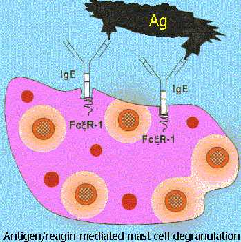
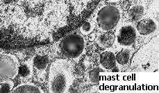

EARLY PHASE OF ANAPHYLAXIS: CELL DEGRANULATION
Almost always, anaphylaxis is caused by soluble allergens with molecular mass sufficient to bridge neighbor IgE molecules on the surface of sensitized cell (> 10 kD), but small enough to penetrate across tissue barriers (< 70 kD). Nevertheless, under special experimental conditions, e.g. in parenteric injection, allergens of higher molecular mass are also able to trigger anaphylaxis.


Degranulation of mast cells is an active process that requires influx of calcium and depends on an intact glycolytic pathway. Involved in the complex sequence is an initial rapid increase in cAMP, followed by a fall to baseline levels within five minutes. The transient elevation of cAMP activates cAMP-dependent protein kinase A and phosphatidylinositol-dependent protein kinase C. The resulting increase in cytosolic calcium influx causes activation of calmodulin-sensitive proteinkinase. Cumulated effects of all aforementioned proteinkinases lead to phosphorylation and activation of cytosolic P-protein and related proteins from the family of calelectrins. Phosphorylation and other alterations of the perigranular membranes render them permeable to water and calcium, resulting in marked swelling of the granules (visible with the electron microscope). The calelectrins function as fusogenes, because they melt perigranular membranes and cause fusion of granules in large vacuoles full of mediators.Simultaneously, calcium-activated enzymes release energy required for the assembly of microtubules and microfilaments. These contractile elements of the cytoskeleton cause the movement of swollen granules toward the cell surface with the cell membrane and spill their contents. Mast cell degranulation can be started not only immunologically (in true anaphylaxis), but also by non-specific stimuli in anaphylactoid reactions. Some cytokines (IL-8) are able to trigger it also. Regardless of the stimulus, degranulation of mast cells is a very finely regulated process, an understanding of which can be used to therapeutic advantage. For example, it was mentioned earlier that one of the early events in mast cell triggering is a transient increase in thee levels of cAMP. If cAMP levels are persistently elevated, as can be achieved by b - -adrenergic agents such as epinephrine, mast cell degranulation is prevented, and the symptoms of type I hypersensitivity are relieved. The complexity of intracellular messenger mechanisms, used for degranulation process, makes it possible to perform pharmacological interference aimed at different links in order to block the process at various points. Sodium chromoglycate (Inthal, Chromolyn, and Tilade) is able to block the increase in intracellular calcium influx. Theophillin (Euphillin) influence the cAMP dependent part of mechanism etc. But, at the same time, due to doubling of regulation circuits and overlap of messenger effects, as a rule none of the drugs is not able to cancel the entire degranulation effect (so called “equal final” principle).
NEXT CHAPTER OR